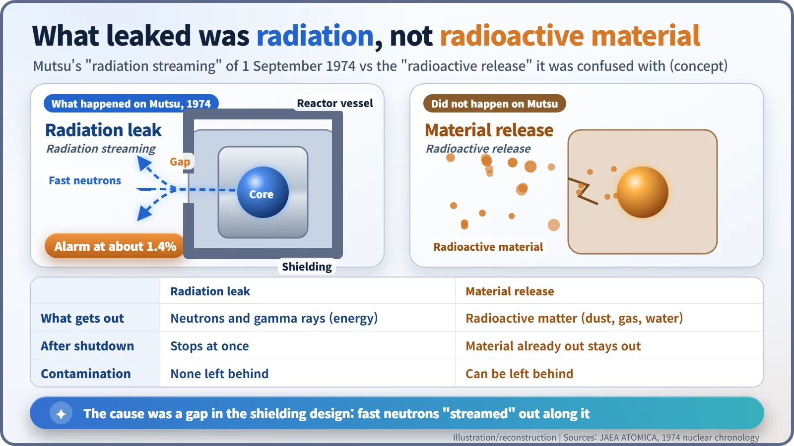
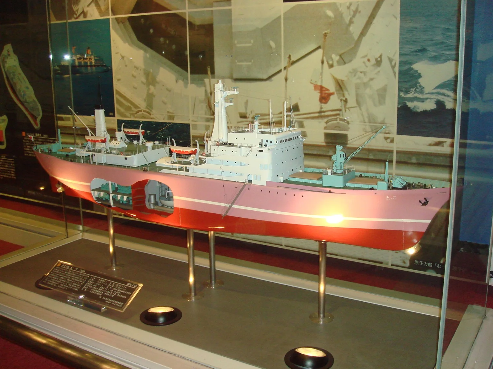
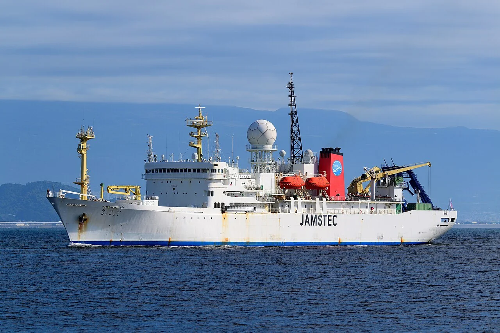

Nuclear History · 165
The Ship With No Harbour to Come Home To — Japan's Nuclear Ship Mutsu and the 1974 Radiation Leak
A small gap in the reactor shielding left Japan's only nuclear ship stranded at sea for fifty days and out of service for sixteen years.
On 1 September 1974, during its first power tests far out in the Pacific, Japan's first nuclear-powered ship, the Mutsu, set off a radiation alarm at about 1.4 per cent reactor power. Fast neutrons were "streaming" through a gap in the reactor shielding; no radioactive material escaped, but fishermen blocked the ship's return for fifty days. It took sixteen years to get her back to sea, and she never carried a commercial cargo before her hull became the research vessel Mirai.
A reactor room in a museum
In Mutsu City, at the northern tip of Japan's main island, a local science museum has an unusual exhibit: a reactor room, cut out of a ship in one piece. It came from the Mutsu, the first and only nuclear-powered ship Japan ever built. She never carried a single commercial cargo, and her fate turned on one alarm that sounded in the middle of the Pacific on 1 September 1974. [1]
A nuclear ship from the country that knew the bomb
In the 1960s the United States had the Savannah and West Germany the Otto Hahn, and Japan, a nation that lives by sea trade, wanted to build up its own know-how. The Japan Nuclear Ship Development Agency was founded in August 1963. The Mutsu's keel was laid in November 1968 and she was launched on 12 June 1969. [4]
She was about 8,240 gross tons and about 130 metres long. Her heart was a pressurized water reactor (PWR, a reactor that keeps its water under high pressure so it carries heat without boiling) of about 36 megawatts of heat: in principle the same as a power-station reactor, only much smaller. Fuel was loaded in 1972, and her home port was Ominato in Mutsu City. But unease about anything nuclear ran deep in the country that had lived through Hiroshima and Nagasaki, and even testing the reactor at the Ominato pier met local opposition. [2]
1 September 1974: an alarm at 1.4 per cent power
So the tests moved far out to sea. On 26 August 1974 the Mutsu left Ominato. Fishing boats tried to block her, and according to a story often told she slipped out through a gap opened by a passing typhoon. About 800 kilometres east of Cape Shiriya, her reactor went critical (a chain reaction sustaining itself) for the first time on 28 August. [3]
On 1 September, with power raised to about 1.4 per cent, the radiation monitors sounded an alarm. The cause was "streaming". The shielding around the reactor (the thick barrier that absorbs radiation) had a gap in its structure, and fast neutrons escaped along it. The Japan Atomic Energy Agency (JAEA) sums it up as an inadequacy in the shielding design, while noting that the propulsion reactor itself worked as designed. There are also accounts that Westinghouse, reviewing the design, had warned of this risk, and that the warning was not acted on. [1]
A radiation leak is not a radioactivity leak
Newspapers at the time reported a "radioactivity leak". What actually happened on the Mutsu was a radiation leak. In Japanese the two terms differ by a single character; physically they are very different things.

A radiation leak is like light escaping through a crack in a lampshade. Switch the reactor off and it stops at once; nothing material has left, so nothing is contaminated. A release of radioactive material means the material itself escapes as dust, gas or water, and whatever has escaped stays out even after shutdown. On the Mutsu, no significant exposure was reported. Yet the distinction did little to calm public anxiety.
Fifty days at sea
On 5 September the fishermen of Mutsu Bay resolved to oppose the ship's return; the bay was their livelihood. With her reactor shut down, the Mutsu waited at sea with nowhere to go. Only on 14 October did the ruling Liberal Democratic Party, Aomori Prefecture, Mutsu City and the fisheries federation sign an agreement, under which the home port would be moved within two and a half years. The ship returned to Ominato on 15 October, fifty days after she had left. [3]
What followed was a long drift. Finding a port willing to repair her took years. She entered Sasebo in Nagasaki Prefecture in October 1978, where the shielding was rebuilt and a full safety inspection carried out through 1982. In 1981 Sekinehama was chosen as the site for a new home port, a dedicated harbour with facilities for treating radioactive liquid waste, and the Mutsu moved there in January 1988. [1]
Back at sea after sixteen years, then a new name
After power tests and sea trials in 1990, the Mutsu was formally certified as a completed nuclear ship on 14 February 1991. Four experimental voyages in 1991 gathered data south of Hawaii, near the equator and in the high winter seas of the North Pacific. In all she covered about 82,000 to 83,000 kilometres under nuclear power (sources differ slightly), more than twice around the Earth. [4]
![Timeline bar from 1960 to 2030 coloured by phase: building from 1963, about sixteen years after the 1974 leak, trials and voyages around 1990 to 1992, decommissioning, and the research ship Mirai from 1997 to 2025, with callouts for the 1963 agency, the 1969 launch, the leak on 1 September 1974, the return on 15 October 1974, repairs at Sasebo 1978 to 1982, the move to Sekinehama in 1988, certification on 14 February 1991, voyages of about 82,000 km, removal of the reactor room in 1995 and the retirement of Mirai in December 2025](../../assets/images/history/165-mutsu-nuclear-ship/fig2-mutsu-timeline.webp)
That was the end of her mission. Under a decommissioning plan adopted in 1992 the fuel was removed, and from February to June 1995 the reactor room was lifted out in one piece. Sources give 1995, 1996 or 1997 for the "reactor removal" because they refer to different steps: taking out the reactor room, rebuilding the hull, and the ship entering service under a new name. [5]

The hull went to the Japan Marine Science and Technology Center (now JAMSTEC) and was reborn as the research vessel Mirai ("future"). From 1997 she worked the Arctic, Pacific and Indian Oceans until her retirement in December 2025. One estimate puts the cost of the nuclear ship programme over 25 years at more than 120 billion yen. [6]

What the Mutsu left behind
The lesson JAEA itself draws from the Mutsu is how important it is to win the understanding of local people when building and operating nuclear ships and their home ports. The reactor did what it was designed to do. A small gap in the shielding broke public trust, and it took sixteen years to get the ship back to sea. [1]